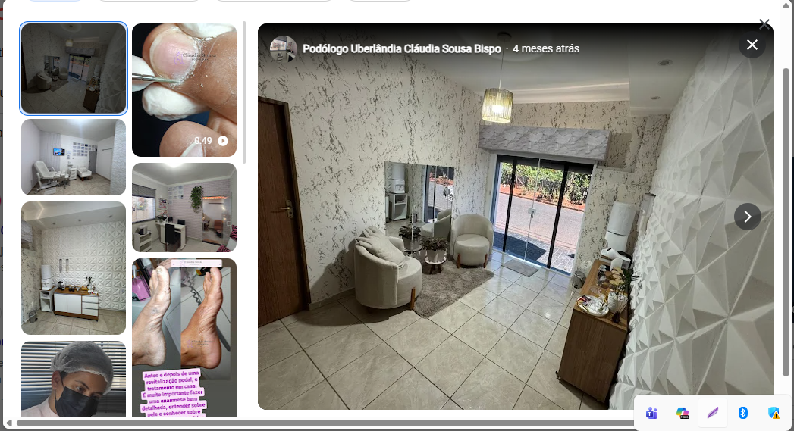

Avaliação podológica
Avaliação individual para identificar as necessidades dos seus pés e orientar os cuidados mais adequados.
Atendimento podológico humanizado, cuidadoso e individualizado para proporcionar mais conforto, saúde e bem-estar no seu dia a dia.

Os pés sustentam nossa rotina e merecem atenção especializada. O atendimento de Cláudia Sousa é pensado para oferecer uma experiência tranquila, acolhedora e focada nas necessidades de cada pessoa.
Da prevenção aos cuidados podológicos, cada atendimento busca unir técnica, higiene, conforto e atenção aos detalhes.
Conheça alguns dos atendimentos que podem fazer parte do cuidado podológico.
Avaliação individual para identificar as necessidades dos seus pés e orientar os cuidados mais adequados.
Cuidados podológicos voltados ao alívio do desconforto e à prevenção de novos episódios.
Tratamento cuidadoso para reduzir incômodos causados por áreas de pressão e espessamento da pele.
Cuidados para melhorar a condição da pele e contribuir para pés mais confortáveis e bem cuidados.
Acompanhamento periódico para ajudar a preservar a saúde dos pés e evitar problemas recorrentes.
Atendimento adaptado às necessidades identificadas durante a avaliação podológica.
Um ambiente claro, organizado e acolhedor, pensado para que cada atendimento seja uma experiência agradável e tranquila.
Fale diretamente com Cláudia Sousa pelo WhatsApp para tirar dúvidas e consultar horários disponíveis.
Conversar no WhatsAppWhatsApp: (34) 99776-3616 • Uberlândia – MG